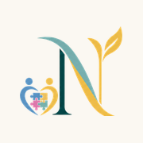

Neras٤ خطوات بسيطة، بدون App Store وبدون أي اشتراك
sydhmwd031-sys.github.io/neras-appلازم يكون متصفح Safari (البوصلة الزرقاء)، مو Chrome ولا داخل الواتساب.
المربع اللي فيه سهم لفوق، تحت في الوسط.
في الأجهزة الأحدث: اضغط ••• أولاً ثم مشاركة.
انزل في القائمة شوي لين تلقاها، جنبها أيقونة ⊞.
الاسم بيطلع نراس لحاله. لو طلع خيار «فتح كتطبيق ويب» خلّه شغّال.
أيقونة نراس صارت على الشاشة. افتحها مثل أي تطبيق، وتشتغل بدون إنترنت بعد أول مرة.